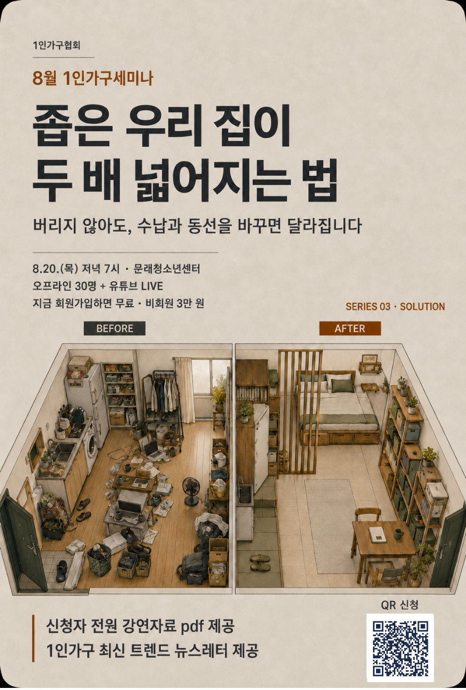

|
|
|
제8호 · 2026.08.03(월)
혼자 사는 삶을 위한
한 주의 정책·생활 소식
월간 정책브리핑 7월호 · 8월 세미나 안내 · 지난주 블로그 5편
|
|
안녕하세요, 1인가구협회 가족 여러분. 8월의 첫 주가 시작됐습니다. 폭염과 장맛비가 번갈아 오는 요즘, 건강 잘 챙기고 계신가요.
이번 KSA WEEKLY 제8호에서는 정책위원회가 새로 펴낸 월간 정책브리핑 7월호「혼자 사는 사람을 위한 7월 정책 이야기」와 함께, 지난 한 주(7/27~7/31) 협회 블로그 이야기 5편, 다가오는 8월 세미나, 그리고 올 12월 협회가 여는 국내 최초 1인가구 종합 페스티벌 ‘2026 1인가구 페스타’(LIFE, BY ME!) 소식까지 담았습니다.
7월 브리핑의 한 줄은 ‘만족도는 역대 최고, 주머니는 주요국 최저’였습니다. 위기 상황의 긴급복지 신청법부터 마음회복 집단상담, 여름철 침수 대비, 인천시의 외로움 정책까지 — 편하게 둘러보세요.
|
|
🔥 8월 정기 세미나 · 안내
좁은 원룸이 두 배 넓어지는 법
자취방 공간정리 & 셀프 인테리어 — 이사 없이도, 우리 집이 달라집니다

|
🗓 일시 2026. 8. 20(목) 저녁 7시~9시
📍 장소 시립 문래청소년센터 (2호선 문래역)
🎤 강사 위재희 (공간정리컨설팅)
👥 대상 라이프스타일에 관심 있는 가구 누구나
💰 참가비 회원 무료 / 비회원 3만 원
📝 내용 버리는 기준부터 수납·동선 재배치, 저예산 셀프 인테리어까지 — 보증금 안 깎이는 원상복구 꿀팁도 함께
|
신청 링크: forms.gle/9qZTKtPc7zz8ebXE9 · QR 코드로도 신청 가능 · 문의 02-2635-9076
|
💡 다음 세미나 주제를 함께 정해요.
듣고 싶은 강연을 남겨주시면 다음 기획에 반영합니다. 로그인 없이 1분이면 충분해요.
|
|
|
🎉 협회 대표 행사 예고 · 2026 1인가구 페스타
혼자 사는 삶이, 하나의 문화가 됩니다
LIFE, BY ME! 사는 건 나답게! · 12월 서울 양재 aT센터
국내 최초, 1인가구 시대를 대표하는 종합 라이프스타일·정책 통합형 페스티벌 ‘2026 1인가구 페스타(SOLO Living Festa)’가 12월 10일(목)~12일(토) 3일간, 서울 양재 aT센터 제1전시장에서 열립니다. 100개사 180부스 규모로, 금융·건강·스마트리빙·가구/인테리어·문화·식품 6개 분야 전시와 정책홍보특별관, 컨퍼런스·세미나·워크숍까지 — 청년(2030)부터 중장년(4050)·시니어(60+)까지 전 세대 1인가구를 위한 자리입니다. 후원(예정): 성평등가족부·보건복지부·서울시·경기도
💰 금융·자산❤️ 건강·멘탈💻 스마트리빙🛋️ 가구·인테리어🎨 문화·라이프🍱 식품·주방🏛️ 정책홍보특별관
⚠ 상세 관람 안내는 협회 홈페이지에서 · 참가기업(부스) 모집 문의 sololivingfesta@gmail.com · 02-2635-0207
|
|
|
노쇼 방지를 위한 세미나 운영 안내
🎁 강의 자료집·강의안 제공 — 정기 세미나에 참석하신 분들께만 강의 자료집과 강의안을 함께 드립니다.
🤝 참여 약속 안내 — 소중한 한 자리를 끝까지 함께해 주시는 문화를 위해, 참가비를 회원 무료 · 비회원 3만 원으로 운영합니다.
|
|
|
📑 협회 소식 · 월간 정책브리핑
월간 정책브리핑 7월호를 펴냈습니다
제2026-07호 「혼자 사는 사람을 위한 7월 정책 이야기 — 만족도는 역대 최고, 주머니는 주요국 최저」 · 1인가구협회 정책위원회 발행(2026-08-03)
혼자 사는 삶에 만족한다는 사람은 역대 가장 많아졌는데, 소득수준은 가장 낮았습니다. KB금융 「2026 한국 1인가구 보고서」(7/19)에서 생활 만족도는 73.5%(2024년 71.2%)로 가장 높았지만, 소득은 전체 가구 평균의 66.0% 수준으로 비교한 나라 가운데 가장 낮았습니다(스페인 92.9%·독일 86.1%). 마음의 만족은 올라갔지만 살림의 기반은 얇아졌습니다.
외로움과 고립을 미리 막겠다던 정부 방침이 7월에 처음 시행되었습니다. 보건복지부가 7월 27일부터 퇴원 노인 긴급 돌봄을 시작했습니다. 혼자 사는 65세 이상 어르신이 퇴원 후 14일 안에 신청하면, 최대 한 달까지 걸리던 서비스가 3~7일 안에 시작됩니다. 식사와 청소, 병원 동행을 돕고 본인 부담은 없습니다.
청년 주거는 지원정책이 시행됐지만 제도적 한계도 함께 드러났습니다. 서울시 ‘더드림집+’ 첫 905가구 청약이 7월 13~15일 진행됐습니다(시세의 30~50%·최장 10년). 한편 국회입법조사처 분석(2025년 12월 발간)에 따르면 집이 좁고 소득이 낮은 데다 임대료 부담까지 큰 1인가구가 11만 7천에 이르고, 그중 67%는 어떤 공적 주거지원도 받지 못하고 있습니다.
|
|
|
지난주 블로그 다이제스트 · 7/27~7/31
01 긴급복지지원제도, 혼자 겪는 위기 이렇게 신청하세요
02 이혼 1인가구 마음회복 집단상담, 8월 무료 모집
03 침수 대비, 혼자 사는 집이 더 위험한 이유
04 인천 1인가구 41만 시대, 외로움도 시가 챙깁니다
05 1인가구 N잡 59.6%, 예·적금 깨고 주식으로
|
|
① 긴급복지지원제도, 혼자 겪는 위기 이렇게 신청하세요
갑작스러운 실직·질병·휴폐업으로 생계가 막혔을 때 먼저 지원하고 나중에 심사하는 제도입니다. 위기사유 발생 6개월 이내·소득 기준중위 75% 이하면 생계비 1인 월 78만 3천 원(최대 6개월)과 의료비 최대 300만 원, 주거·연료비까지 받을 수 있습니다. 신청은 읍면동 행정복지센터·보건복지상담센터(☎129)·복지로에서 가능합니다.
블로그에서 전문 보기 ›
복지로에서 긴급복지 생계지원 신청하기 ›
|
② 이혼 1인가구 마음회복 집단상담, 8월 무료 모집
동작구1인가구지원센터가 이혼 후 혼자가 된 분들을 위한 집단상담 ‘이혼, 내 인생의 터닝포인트’를 엽니다. 서울 생활권 이혼 1인가구 8명 선착순·무료, 8월 7일부터 9월 4일까지 4회기(금 저녁 7시)로 진행하며 접수는 8월 5일까지입니다. 문의 02-6294-1621.
블로그에서 전문 보기 ›
동작구 집단상담 모집 공고 · 신청하기 ›
|
③ 침수 대비, 혼자 사는 집이 더 위험한 이유
올여름부터 ‘재난성 호우 긴급재난문자’가 새로 도입돼, 1시간 85mm 이상이면서 15분간 25mm 이상 또는 1시간 100mm를 넘으면 별도 문자가 울립니다. 지하·반지하는 빗물이 들어오면 5~10분 만에 잠기고 수압 때문에 안에서 문이 열리지 않아, 함께 판단해 줄 사람이 없는 1인가구가 특히 불리합니다. 서울시는 침수 이력 주택·저지대 지하주택에 물막이판·역류방지시설·수중펌프를 공사비 전액 무료로 설치하고 있으니 주소지 동주민센터에 문의해 보세요.
|
④ 인천 1인가구 41만 시대, 외로움도 시가 챙깁니다
인천의 1인가구는 41만 1천 가구·전체의 32.5%. 인천시는 올해 1월 전국에서 드물게 ‘외로움돌봄국’을 신설하고, 2026년 시행계획에 3,646억 원·46개 사업을 담았습니다. ‘1인가구 행복 동행 사업’(중장년 수다살롱·행복한 건강밥상·재무교육·군구 자유제안)은 군·구별로 모집 일정이 다르니, 인천 1인가구 포털의 ‘프로그램 일정’에서 지금 열려 있는 모집을 확인해 신청하세요. 24시간 외로움 상담콜은 032-120입니다.
인천시 2026년 1인가구 시행계획 보기 ›
지금 모집 중인 프로그램 신청하기 ›
|
⑤ 1인가구 N잡 59.6%, 예·적금 깨고 주식으로
KB금융 ‘2026 한국 1인가구 보고서’에 따르면 1인가구 10명 중 6명(59.6%)이 N잡을 하고 있습니다. 돈이 머무는 곳도 달라져 예·적금은 28.3%로 7.8%p 줄고 국내외 주식·ETF는 21.1%로 6.1%p 늘었습니다. 다만 빚내서 투자한 경험이 34.0%까지 올라, 비상자금 3개월치를 먼저 쌓아두는 것이 우선입니다.
블로그에서 전문 보기 ›
|
|
|
|
사단법인 1인가구협회 (Korea Small Household Association)
홈페이지 ksaofficial.co.kr · T. 02-2635-9076 · 본 메일은 협회 회원님께 발송되는 주간 소식지입니다.
※ 게재 정보는 발행 시점 기준이며 실제 일정·혜택은 변경될 수 있습니다.
문의하기 · info.ksaofficial@gmail.com
더 이상 소식을 받고 싶지 않으시면 수신거부 하실 수 있습니다.
|